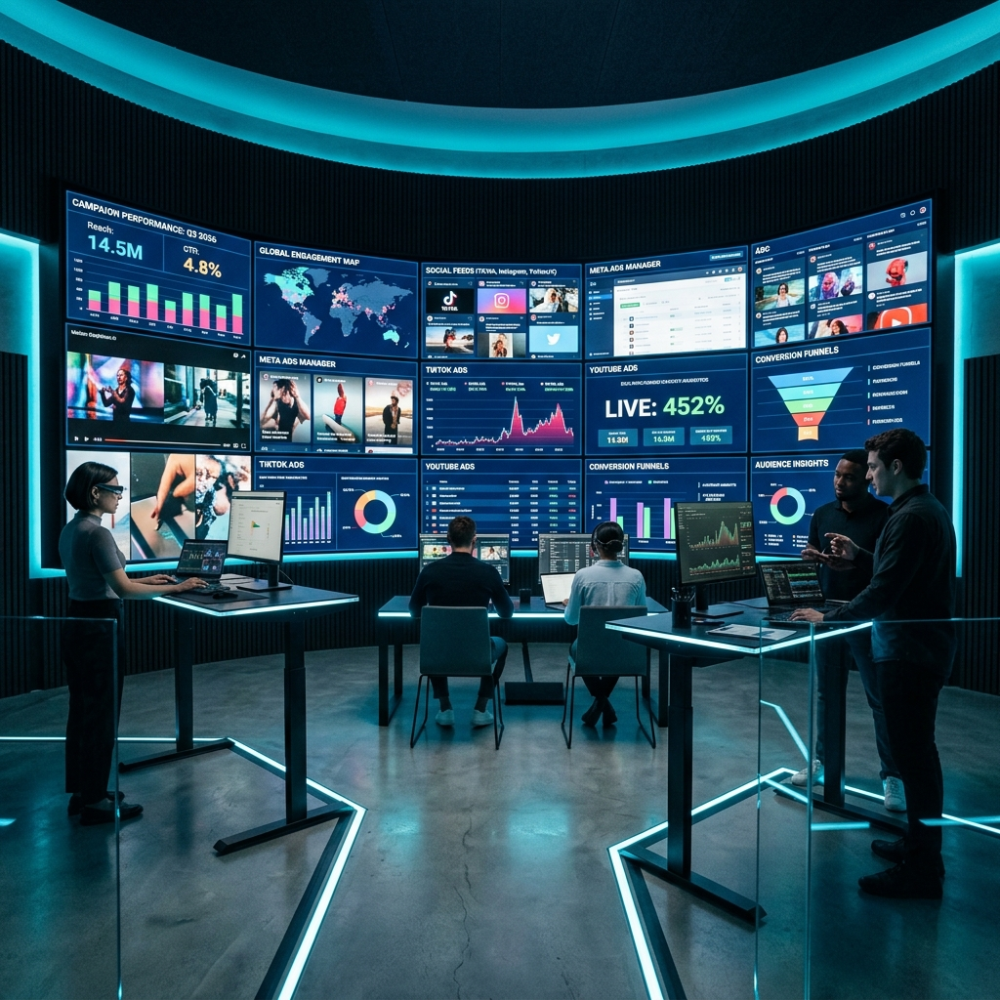

Advanced Ad Campaign Testing with Video Grids: A Multi-Stream Strategy

In the hyper-competitive world of digital marketing, the speed of iteration is often the difference between a high-performing campaign and a costly failure. As video content continues to dominate consumer attention, marketers are faced with the daunting task of managing, verifying, and optimizing hundreds of creative variations across multiple platforms. The traditional method of checking ads sequentially is no longer viable in 2026. This is where high-velocity video grids, powered by YoutubeMulti, transform the workflow of modern marketing teams.
The Shift to Multi-Dimensional Ad Verification
Ten years ago, a digital ad campaign might consist of a handful of static images and one or two video spots. Today, a global campaign might involve thousands of dynamic creative variations tailored to different demographics, locations, and device types. Verifying that these ads are rendering correctly, observing the "hook" effectiveness, and ensuring brand consistency across dozens of concurrent streams is a logistical nightmare without the right tools.
Advanced ad campaign testing requires a multi-dimensional approach. It's not just about whether the ad plays; it's about how it stands out in a crowded digital environment. By using a YouTube multi-screen display strategy, marketers can simulate the real-world experience of a user who is bombarded with content, allowing for a more authentic assessment of "thumb-stop" power.
Leveraging Video Grids for Simultaneous Creative Testing
The core advantage of using a video grid for ad testing is the ability to perform simultaneous creative verification. Instead of opening 20 browser tabs and manually switching between them, a marketing analyst can load a 4x4 or 5x5 grid in a single interface. This setup provides several critical advantages:
- Visual Pacing and Flow: By watching different versions of a creative side-by-side, editors can instantly spot discrepancies in pacing, transitions, or color grading that might be invisible when viewed in isolation.
- Messaging Synchronization: For campaigns that rely on synchronized messaging across different regions or languages, the grid allows for a "beat-by-beat" audit to ensure the message remains consistent.
- Hook Analysis: The first three seconds of a video ad are the most critical. Loading 16 variations at once allows a team to instantly see which creative "grabs" the eye first, providing a qualitative layer to supplement quantitative CTR data.
A/B Testing in High Fidelity
A/B testing is the cornerstone of budget optimization. However, data from a dashboard doesn't always tell the whole story. A variation might have a higher click-through rate but lower brand sentiment because of an aggressive "clickbait" thumbnail. By monitoring live engagement and comments across multiple video streams, marketers can gain a deeper understanding of why certain ads perform better.
With YoutubeMulti, you can load your test variations alongside competitor ads or trending organic content in your niche. This "contextual testing" provides a reality check: Does your ad look like a premium piece of content, or does it stand out as an intrusive interruption? Seeing your creative "in the wild" alongside the very content your audience loves is invaluable for refining your brand voice.
Real-Time Sentiment and Engagement Triangulation
Modern campaigns don't just happen on YouTube; they are multi-platform events. A viral ad on TikTok might trigger a surge in Google searches or a flurry of reaction videos on YouTube. To truly understand a campaign's impact, you need to monitor these platforms simultaneously.
Using a multi-stream setup, a PR team can track:
- The primary brand ad on YouTube.
- User-generated reaction videos as they appear in real-time.
- Live influencer mentions across various streams.
- Localized versions of the ad to ensure regional sensitivities are respected.
This triangulation allows for a "crisis management" layer as well. If an ad starts receiving negative feedback in one region, the team can see it instantly across the grid and pause the campaign before it scales, saving thousands of dollars in wasted spend.
Building Your Marketing Command Center
To implement an advanced testing workflow, your hardware and software need to be up to the task. Monitoring 20+ HD video streams requires significant resources. YoutubeMulti is optimized for these high-stakes environments, utilizing hardware acceleration to ensure that "lag" doesn't interfere with your analysis. A smooth, stutter-free playback is essential when you are trying to judge the micro-timing of a call-to-action.
Setting up your dashboard should be intuitive. Group your ads by category—one row for "Product Showcase," one row for "Customer Testimonials," and another for "Competitive Comparison." This spatial organization helps the human brain process the information density without feeling overwhelmed.
Budget Optimization via Visual Intelligence
Identifying underperforming creative early is the fastest way to improve your ROAS (Return on Ad Spend). Often, an ad fails not because of the offer, but because of technical issues like a muffled audio track or a "safe zone" violation where a logo is cut off on mobile devices. A quick visual audit across a grid would catch these errors in seconds, whereas a data-only approach might take days to signal that something is wrong.
Visual intelligence is the "missing link" in programmatic advertising. While algorithms handle the bidding, humans must handle the creative quality. YoutubeMulti bridges this gap, providing the interface needed for human oversight in an increasingly automated world.
Technical Best Practices for Marketers
When running a high-intensity monitoring grid, keep these technical tips in mind:
- Mute Strategy: Keep all streams muted by default and use a "hover-to-listen" feature to check audio quality on specific ads without creating a wall of noise.
- Resolution Balance: You don't need 4K for every stream in a 25-video grid. Dropping to 720p or 480p allows for more streams without taxing your system.
- Regular Audits: Schedule "Grid Audits" at the start of every new campaign flight to ensure all redirects and landing page links are functional across the featured videos.
Conclusion: The Future of Programmatic Video Intelligence
The future of marketing belongs to those who can process information the fastest. As AI-generated video becomes more common, the volume of content will only increase. Tools like YoutubeMulti are no longer "optional" for top-tier agencies; they are the backbone of a modern video marketing operation. By combining the power of data with the precision of multi-stream visual verification, you can ensure that your brand doesn't just reach the audience—it resonates with them.